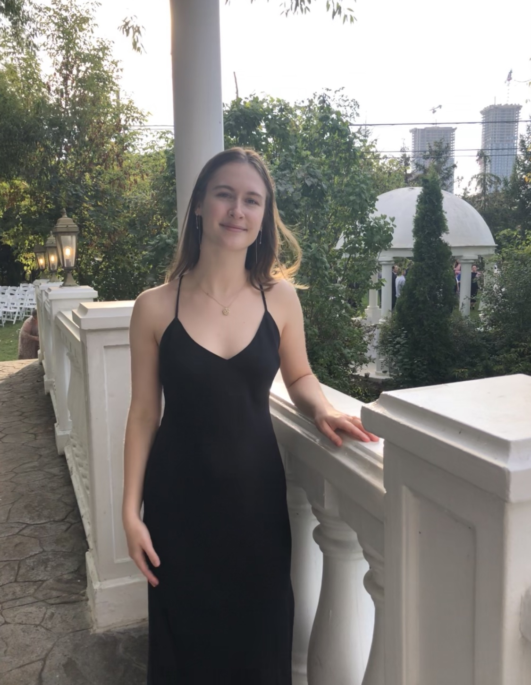

Elsie Benko
My name is Elsie Benko and I am a fourth-year student at York University, majoring in Information Technology with a strong interest in Project Management. I actively pursue courses to enhance my Project Management skills and gain practical knowledge.

I have an innate ability to create a nurturing atmosphere within teams, where I not only actively listen, paraphrase, and empathize but also ensure that each team member's perspective is cherished and integrated.
I hope that this CV answers some of the questions about myself. Such as my work experience, my hobbies, my skills, and much more!
My resume is also available with all of the important information about myself.
Experience
Project Manager | IT Department, York University, part-time Intern, Toronto, 2022-2023
- Managed a project focused on the analysis and implementation of Risk Management practices
- Coordinated a team of 4 stakeholders, including Business Analysts and department managers
- Presented weekly reports to the stakeholders
- Was nominated for York University DARE – Dean’s Award for Research Excellence
Business Analyst | The Ministry of Health, Ontario Health, part-time Intern, Toronto, 2021 – 2022
- Assisted in the development of process and journey maps based on customer feedback
- Participated in workshops with internal and external customers
- Prepared communication, including project plans, meeting minutes
Team Manager | Canada Smiles Soccer Club, part-time volunteer, Toronto, 2015 - Present
- Developed team schedules and assigned playing times
- Oversaw communication with players (4-10 years old) and parents
- Refereed games and collected payments
Hostess | East Side Mario’s, North York, 2020
- Responsible for all phases of the customer communication process, from reservations and customer greeting to billing and payment
- Ensured compliance with Covid-19 standards
Education
Bachelor of IT and Project Management, York University, 2020 – 2024 (pending graduation)
- In recognition of high academic achievement, selected to lead IT Risk Management stream
- Nominated for York University Dean’s award in 2023
- Currently placed in the top quartile
Enhanced program for Film Arts and Technology, Claude Watson High School, graduated in 2020
- Honor roll student each of the 4 years
-
Also a volunteer for the Claude Watson Program for Film Arts and Technology
Skills
-
Project Management
-
Business Analysis
-
Risk Management
-
Change Management
-
Methodologies such as Agile and Waterfall
-
User Experience (UX) Design
-
Technical Skills such as Java, HTML/CSS, and SQL
-
Microsoft Office, including PowerPoint, Word, and Excel
-
Communication
-
Teamwork
Hobbies and Interests
-
Sports:
Soccer
- Volleyball
\
- Video Games
- Fortnite
- Rocket League
- Valorant
- CS2
-
Film Arts and Videography